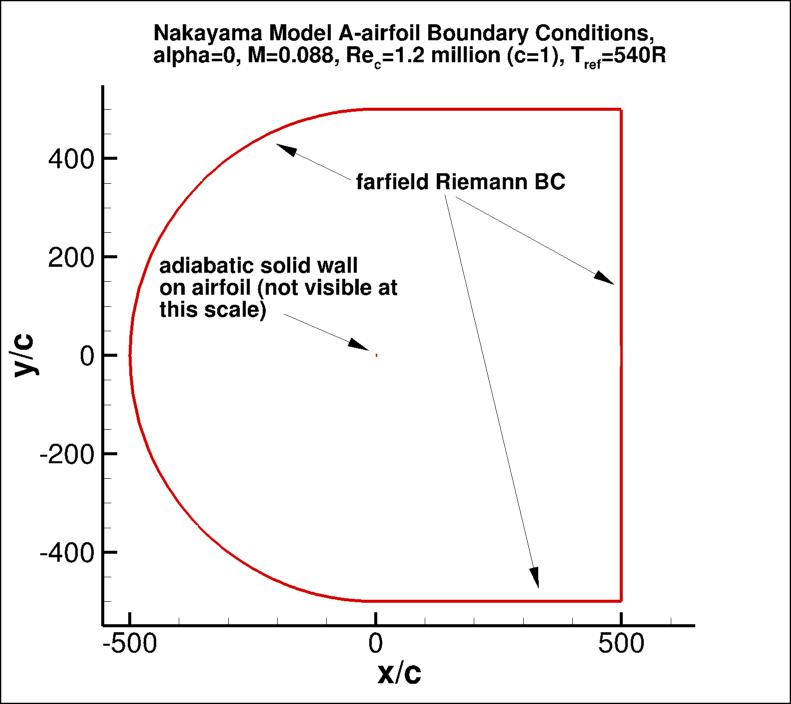

|
Langley Research CenterTurbulence Modeling Resource |
Return to: Turbulence Modeling Resource Home Page
VERIF/2DANW: 2D Airfoil Near-Wake Verification Case - Intro Page
NOTE: this page and its links have been updated
to reflect an extension of the grid's farfield extent to 500c.
The old results (with farfield wake extend of 20C) have been deprecated.
The purpose here is to provide a large sequence of nested grids
of the same family,
along with results from existing CFD codes that employ specific forms of particular turbulence
models, in order to help programmers verify their implementations of these same models.
On a given grid, there may be differences between the results from different codes, but presumably
as the grid is refined the results should approach the same answer (if the flow conditions and
boundary conditions are the same).
With verification, the purpose is not to establish the "goodness" of a model compared to experiment,
but rather to establish that a model has been implemented correctly, as intended according to the
equations and boundary conditions. (It is through validation that a model's "goodness" is
established.) The purpose here is primarily verification.
The 2-D airfoil near-wake case involves flow over an airfoil.
Experiment exists for this case, but the main purpose here (for verification) is NOT comparison with
experiment. Comparison with experiment for this case can be found under the validation section, at the
2DANW: 2D Airfoil Near-Wake page.
This case was run fully turbulent at
angle of attack of zero degrees, M = 0.088, and a Reynolds number of Re = 1.2 million based on
airfoil chord length.
The outer boundary of the grid in this case is 500c from the airfoil, where farfield Riemann boundary
conditions are imposed.
Earlier results with a grid with only 20c farfield extent are no longer "official"
because specific implementation differences in the farfield boundary condition
may have a significant influence the comparisons with the reference results.
(Note: the main influence of the too-close farfield extent in our tests was on the CL.)
Note that the current set of grids for this case were based on airfoil coordinates extracted from the reference:
Nakayama, A., "Characteristics of the Flow around Conventional and Supercritical Airfoils," J. Fluid Mech. (1985), Vol. 160, pp. 155-179,
https://doi.org/10.1017/S0022112085003433.
The airfoil is a DSMA661(MODEL A). The airfoil shape does not have an analytic definition; the original airfoil point definition
can be found in DSMA661 original point definition.
The original airfoil has a blunt trailing edge, but this has been altered to be sharp for the purposes of this study.
Also, as created, the current grids display some non-smoothness on the surface. Therefore, for the purpose of verification, you must use
these same grids, or else create grids with exactly the same airfoil surface shape.
The as-created airfoil surface points (from the finest grid) are given in
DSMA661 as-created point definition.
Another important note: although M=0.088 is low enough that the flow is "essentially" incompressible,
this is a compressible flow verification case. Therefore, if you run this case with an incompressible
code, your results may be close - but not quite the same - as the grid is refined.
This case was used as a verification test case for
High Lift Prediction Workshop 3 (HiLiftPW-3). However, the case run for
the workshop used the earlier version with farfield extent of 20c. 
What to Expect:
(Other turbulence model results may be added in the future.)
Return to: Turbulence Modeling Resource Home Page
Responsible NASA Official:
Ethan Vogel
RESULTS
LINK TO EQUATIONS
MRR Level
SA
SA eqns
4
SSTm
SSTm eqns
3
Page Curator:
Clark Pederson
Last Updated: 11/08/2021